1. 프로그램 소개
안녕하세요. 노블아크(NOBLE ARC)의 블로그 자동화 프로그램 포스티아(Postia)에 대해 지금부터 자세히 설명드리겠습니다.
포스티아는 블로그 운영의 전 과정을 자동화하는 프로그램입니다. 키워드 하나만 입력하면 AI가 고품질 블로그 글을 작성하고, 관련 이미지를 생성하여 네이버 블로그, 티스토리, 워드프레스, 블로거(Blogger)에 자동으로 발행합니다. 네 개의 플랫폼에 동시 발행이 가능하며, 한 번 설정해두면 스케줄에 따라 완전 자동으로 운영됩니다.
단순히 글을 생성하는 것에 그치지 않고, 쿠팡 파트너스 연동을 통한 상품 리뷰 자동화, 발행된 블로그 글을 인스타그램·스레드·페이스북 형식으로 자동 변환하는 SNS 기능, 그리고 키워드 검색량 분석을 위한 리서치 센터까지 갖추고 있습니다.
수년간의 블로그 운영 노하우를 바탕으로 검색 유입과 콘텐츠 품질을 모두 고려한 구조로 설계되었습니다. 복잡한 설정 없이 처음 한 번만 세팅하면 이후로는 최소한의 개입으로 블로그를 지속적으로 운영할 수 있습니다.
2. 구매 및 설치
noblearc.github.io에 접속하셔서 요금제를 선택하신 후 구매하시면 됩니다. 결제가 완료되면 입력하신 이메일로 라이선스 키와 프로그램 다운로드 링크가 함께 발송됩니다.
다운로드 링크를 클릭하시면 GitHub 릴리즈 페이지로 이동합니다. 파일 목록 중 Postia-Setup-버전.exe 파일 하나만 다운로드하시면 됩니다. .blockmap, .yml, Source code 파일은 다운로드하지 않으셔도 됩니다.
다운로드 받으신 설치 파일을 더블클릭합니다. 컴퓨터 환경에 따라 Windows 보호 경고창이 뜰 수 있습니다. 이 경우 추가정보를 클릭하신 후 실행 버튼을 누르시면 됩니다. 저희 프로그램은 안전한 프로그램이니 안심하고 진행하시면 됩니다.
설치 화면에서 사용자 선택 후 설치 버튼을 누르시면 설치가 완료됩니다. 설치가 끝나면 바탕화면에 포스티아 바로가기 아이콘이 생성됩니다.
3. 라이선스 인증
프로그램을 처음 실행하시면 라이선스 인증 화면이 나타납니다. 구매 후 이메일로 받으신 라이선스 키를 입력해주세요. 키 형식은 NARC-XXXX-XXXX-XXXX이며, 하이픈(-)은 자동으로 입력됩니다.
키를 입력하신 후 인증하기 버튼을 클릭합니다. 인증이 완료되면 라이선스 키는 자동으로 저장되어 다음 실행 시에는 별도로 입력하지 않아도 됩니다.
⚠️ 라이선스는 1개의 기기에서만 사용 가능합니다. PC를 교체하시거나 기기를 변경하셔야 할 경우 13-1 기기 초기화 항목을 참고하세요.
⚠️ 인터넷이 연결되어 있어야 인증이 가능합니다. 최초 인증 후에는 최대 7일간 오프라인 환경에서도 사용 가능합니다.
4. 첫 설정 (필수 준비)
라이선스 인증을 마치셨다면 프로그램을 사용하기 위한 필수 준비를 진행합니다. 가장 중요한 것은 Vertex AI 서비스 계정 JSON 파일 등록입니다. 이 파일이 등록되어야 AI 글 생성과 이미지 생성이 모두 작동합니다.
4-1 Vertex AI JSON 발급 및 등록 (필수)
저희 프로그램에서 가장 기본이 되는 설정 사항입니다. 프로그램 사용 전 한번만 하시면 됩니다. 이후에는 자동 저장되어 계속 신경쓰지 않고 프로그램을 사용하실 수 있습니다. Vertex AI 서비스 계정 JSON 키를 반드시 발급 받으셔야 합니다. Vertex AI를 통해 블로그 글 생성과 이미지 생성이 이루어집니다. Vertex AI를 이용하는 이유는 300달러(43만원 상당~44만원 상당)의 유료 크레딧을 무료로 지급하고 있기 때문입니다. 44만원 상당의 크레딧으로 엄청난 양의 블로그 글과 이미지를 생성할 수 있어 비용 없이 운영할 수 있습니다. 최저의 비용으로 최상의 블로그 자동화 프로그램을 목표로 하는 저희 프로그램에 딱 맞는 필수 키입니다. 거기에 300달러(44만원 상당)의 크레딧을 모두 다 사용한 경우 추가로 다른 계정을 만들어서 또 300달러 크레딧을 받아서 사용하시면 됩니다.
구글 300달러 크레딧을 추가로 발급받고자 하신다면, 명의를 달리하시고 전화번호와 카드번호를 다른 것으로 하여 새 구글 계정으로 발급받으시는 것을 권장드립니다. 아울러 IP 주소도 달리하시는 것을 권장드립니다.
추가로 구글의 300달러 크레딧 무료지급 정책은 구글의 정책 변화에 따라 바뀔 수 있는 점은 미리 안내드립니다.
https://cloud.google.com 접속
먼저 위의 주소를 클릭하여 해당 구글 클라우드 사이트로 접속하여주세요. 구글 로그인도 같이 해주세요.

또는 구글 검색에 구글 클라우드 콘솔 이라고 검색하셔서 나오는 결과를 클릭하시고 들어가셔도 됩니다.


그럼 위와 같은 화면이 나옵니다. 여기서 무료로 시작하기 버튼을 클릭해주세요. 화면이 위와 같이 다르게 나오는데 둘다 같습니다. 똑같이 무료로 시작하기 누르시면 되요.

그럼 위와 같은 화면이 나오는데 오른쪽에 300달러의 무료크레딧이라고 써있는 계정만 300달러 무료체험을 신청해서 이용할 수 있습니다. 만약 저런 문구가 뜨지 않는다면 구글의 다른 유료 서비스를 이용하여서 300달러 크레딧 사용이 막힌 경우입니다. 저런 문구가 안뜨면 다른 계정으로 다시 시도해주셔야 합니다.
또한 이 사항을 진행하셔서 오른쪽에 자동 청구 없음이라는 안내문에서 보이듯이 크레딧을 다 사용하시더라도 추가로 요금이 다시 자동 청구 되는 일은 없습니다. 다만 크레딧을 모두 사용하고 나서도 계속 같은 계정을 사용하시면 사용한만큼 요금이 청구됩니다. 그러므로 300달러 크레딧을 모두 소진하셨다면 다른 계정을 만드셔서 추가로 300달러 크레딧을 받으시면 됩니다.
주의사항: 구글클라우드, 구글맵에서 유료 고객으로 등록하신 이력이 없으신 계정으로 하셔야 합니다.
국가를 대한민국으로 해주시고 서비스 약관 동의 체크 해줍니다. 그리고 하단에 계속 버튼을 클릭해주세요.

자 다음 화면입니다. 여기서 계좌유형은 개인으로 해주시고 주소는 자신의 주소를 입력해주세요. 우편번호까지 입력하셔야 합니다. 전화번호는 선택사항으로 적지 않으셔도 됩니다.
유효기간이 90일이기 때문에 90일 안에 크레딧을 모두 다 사용하시길 권장드립니다.

이용하는 사람마다 다르게 나타나는 안내창입니다. 어떤분은 아예 이런 창이 안뜨는 분도 있고 어떤분은 이렇게 15000원 일회성 선불결제를 해야한다고 나옵니다. 하지만 걱정하지 않으셔도 됩니다. 구글이 가져가는 금액이 아니고 90일이 지나면 반환되는 금액입니다.(또는 그 전에 해지시 바로 환급) 300달러 크레딧은 그 자체로 무료로 지급되는 사항입니다.
영상을 무료로 생성할 수 있는 크레딧을 지급 받았으니 이제 Vertex AI JSON을 다운로드 받아야할 차례입니다. 지금부터 설명드리겠습니다.

우선 상단에 현재 선택된 프로젝트 이름을 클릭합니다.

프로젝트 선택 창이 열리면 우측 상단의 "새 프로젝트" 버튼을 클릭합니다.

프로젝트 이름은 아무 이름이나 자유롭게 입력하시고, 조직은 "조직 없음"으로 설정한 후 "만들기"를 클릭합니다.
새 프로젝트를 발급 받으시고 나서 새로 만드신 프로젝트로 선택되어있는지 확인하세요. 만약 새로 만드신 프로젝트로 선택되어 있지 않으면 새로 만드신 프로젝트를 선택하신 후 아래 사항 진행해주세요.

클라우드 처음 화면에서 왼쪽 최상단에 탐색 버튼을 클릭해주세요.

그러면 위와 같은 화면이 나오는데 여기서 IAM 및 관리자 탭을 클릭하시면 오른쪽에 창이 하나 뜹니다. 여기서 중간에 있는 서비스 계정을 클릭하여 줍니다.

이제 상단에 있는 서비스 계정 만들기를 클릭해줍니다.

그럼 위와 같은 화면이 나오는데 서비스 계정 이름에 자신이 원하는 이름을 아무거나 입력해줍니다. 그럼 바로 밑에 서비스 계정 ID는 자동으로 발급 됩니다. 그 아래 만들고 계속하기 버튼을 클릭하시면 됩니다.
그럼 위와 같은 화면이 나오는데 여기서 역할 선택을 선택하신 후 검색창에 VERTEX 라고 검색해주세요. 그러면 Agent Platform User라고 뜹니다. 이것을 선택하시고 밑에 있는 완료 버튼을 눌러주세요.

완료 버튼을 누르시면 위와 같은 화면이 뜹니다. 여기서 이메일이라고 적힌 곳 아래 이메일 주소를 클릭해주세요.

주소를 클릭하면 위와 같은 화면이 뜹니다. 여기서 키라는 탭을 바로 클릭해주세요.

키 탭을 클릭하시면 위와 같은 화면이 뜨는데 여기서 키추가를 클릭하시면 하단에 새 키 만들기라고 뜹니다. 그것을 클릭해주세요.

다음으로 뜨는 창에서 JSON이 선택되어 있을겁니다. 그대로 유지하신채 오른쪽 밑에 만들기 버튼을 클릭해주세요!!

그럼 이렇게 비공개 키가 컴퓨터에 저장됨이라고 뜨게 됩니다. 확인하시고 닫기 버튼을 클릭해주세요.

자 그럼 성공적으로 Vertex AI 서비스 계정 JSON 키 발급을 마쳤습니다.

발급 받으신 JSON 파일을 프로그램 설정 탭에 들어가셔서 Vertex AI JSON 파일 등록 버튼을 클릭하시면 프로그램에 자동 적용되고 저장됩니다.
주의사항: JSON 파일은 단 한번만 다운로드가 가능합니다. 그렇기 때문에 업로드 하셨더라도 따로 잘 보관해놓으시기 바랍니다.
다음으로


다음으로 해주실 사항은 왼쪽 맨위에 탐색 버튼을 클릭하신 후 결제 버튼을 클릭해주세요.
그 다음 결제 화면으로 이동해주세요.

결제 화면으로 이동하면 위와 같은 화면이 오른쪽 하단에 또는 중앙에 보이실 겁니다. 여기서 파란색 활성화 버튼을 눌러주세요. 그런데 이 활성화 버튼이 어떤 분은 화면 최상단에 뜨는 경우도 있습니다. 구글이 UI를 다소 복잡하게 해놨기 때문에 뜨는 곳이 한두 군데 중복된 경우가 있더군요. 활성화 파란색 버튼이 뜬다면 바로 활성화 버튼을 눌러주세요.

지금까지 진행하던 프로젝트를 다시 클릭해서 처음으로 돌아오셔서 위와 같이 일반계정 활성화 버튼이 보인다면 일반계정 활성화 버튼을 눌러주세요. 만약 위와 같은 일반계정 활성화 버튼이 나오지 않는다면 활성화 적용이 잘 된 것입니다.

마지막으로 다시 왼쪽 최상단의 탐색창을 클릭하시고 API 및 서비스 버튼을 클릭해주세요.
Vertex AI API 사용설정을 해야합니다.
Google Cloud Console의 상단 검색창을 활용하여 Vertex AI API를 찾아 활성화합니다.
① Google Cloud Console 화면 맨 위 검색창에 vertex 라고 입력하세요. 자동완성 목록이 나타납니다.

② 검색 버튼을 누른 후 검색 결과 목록에서 Vertex AI (Agent Platform) 항목을 클릭하세요. 목록 최상단에 표시됩니다.

③ Vertex AI (Agent Platform) 페이지에 진입하면 Enable APIs 버튼이 보입니다. 해당 버튼을 클릭하세요. 이 버튼을 눌러야 Vertex AI API가 프로젝트에 활성화됩니다.

④ API 활성화가 완료되면 아래와 같이 인증 방법 선택 화면이 나타납니다. 여기서는 별도로 조작할 필요 없이 창을 닫으셔도 됩니다. Vertex AI API가 정상적으로 활성화된 것이므로, 이전 단계로 돌아가 서비스 계정 JSON 발급을 계속 진행하시면 됩니다.

아래 사항은 해당되시는분들만 참고하세요.

만약 이런 화면이 뜨는 분들이 계신다면 아래 설명대로 한번 해보세요.
조직 정책 차단 시 해결 방법
가장 먼저 프로젝트 이름을 클릭하세요. 그리고 나서 새 프로젝트를 클릭합니다. 새로운 프로젝트로 다시 시도하는 방법입니다.

프로젝트 이름을 자유롭게 입력하고, 조직은 "조직 없음"으로 설정한 후 "만들기"를 클릭합니다.

만들어진 새프로젝트 선택하신 후 다시 위에서 설명드렸던 Vertex AI JSON 발급 받는 법을 다시 해주시면 됩니다. 결제설정 말고 JSON 발급 받는 법 이 부분만 참고하세요.
4-1 추가정보. Vertex AI 이미지 생성 한도 상향 선택사항

이 이미지 생성 한도 횟수를 증대 시킬 수 있습니다. 이것을 해놓으시면 이미지 생성 속도가 빨라집니다. 무료로 신청이 가능합니다. 보통 수분내 자동 승인됩니다. 속도 상관없으시다면 건너 뛰셔도 됩니다.
① GCP 콘솔 좌측 메뉴에서 "IAM 및 관리자" 클릭 → 하위 메뉴에서 "할당량 및 시스템 한도" 클릭
할당량 및 시스템 한도 화면에서 필터 입력란에 아래 순서대로 입력하여 항목을 좁혀나갑니다.
필터 ① 서비스 : Agent Platform API
필터 ② Regional online prediction
필터 ③ region:us-central1
3가지 필터를 순서대로 입력하면 목록이 좁혀집니다. 필터링된 목록에서 측정기준(위치) 항목의 base_model 값이 정확히 imagen-3.0-generate 인 행을 찾아 선택해 주세요. 아래 스크린샷과 동일한 항목인지 반드시 확인하신 후 진행하세요.

② 해당 항목 오른쪽 끝 점 3개(⋮) 클릭 → "할당량 수정" 선택

③ 새 값 입력(예: 7) 및 간단한 요청 설명 입력 후 "다음" 클릭
요청 설명 예시: 이미지 사용량이 많아 추가 요청 드립니다.

④ 연락처(전화번호) 입력 후 "요청 제출" 클릭 — 완료!

※ 승인 후 바로 적용되며 별도 재설정 없이 이미지 생성이 원활해집니다.
4-2 OpenAI API 키 발급 (선택)
이 API키 발급은 유료 선택사항입니다. 별도로 OpenAI 사이트에서 결제하셔서 이용하시는 사항입니다. 참고하시고 이용하시기 바랍니다.
OpenAI API는 Vertex AI 대신 OpenAI를 AI 백엔드로 사용하고 싶으신 경우에 필요합니다. 블로그 글 생성에는 GPT 모델이, 이미지 생성에는 DALL-E 계열 모델이 사용됩니다. API 키 발급도 간단하기 때문에 잘 따라오시면 될 거 같습니다.
platform.openai.com 이 주소를 주소창에 복사 붙여넣기 하셔서 접속하여 줍니다.

여기서 구글로 계속하기 버튼을 클릭해줍니다.

다음 사항에 모두 동의합니다에 체크를 해줍니다. 그리고 아래 계정생성 끝내기를 누르시면 간단하게 가입이 완료됩니다.

입력란에 아무거나 입력하신 후 Create organization 버튼을 클릭해줍니다.

그 다음 이메일 주소를 적으신 후 continue 버튼을 클릭해주세요.

그 다음 Generate API Key 버튼을 클릭해 줍니다.
그럼 그 다음에는 결제 화면이 뜨는데요 OpenAI API를 사용하기로 결정되셨다면 결제를 해주셔야 합니다.

우선 5달러부터 사용하시길 권장드립니다.

결제가 완료되셨다면 위와 같은 화면이 나옵니다. 여기서 API KEYS를 클릭해줍니다.

오른쪽 상단의 Create new secret key 버튼을 클릭하세요.

이름을 아무거나 설정하신 후 Create secret key 버튼을 클릭하시면 됩니다. 이제 API키가 생성이 됩니다.

API키는 한번만 보여줍니다. 그렇기 때문에 따로 보관해놓으시는 것을 추천드립니다. COPY 버튼을 클릭해서 복사해줍니다. 타인에게 노출되지 않도록 주의하세요.

마지막으로 포스티아 프로그램으로 돌아오셔서 설정 탭에 OpenAI API 키 입력란에 붙여넣기 하시고 저장하기 버튼을 클릭하시면 됩니다. 역시 한번 저장하면 계속 보관되어 저장된 상태가 유지됩니다.
추가 안내사항
사용 한도 설정 (권장)
의도치 않은 과금을 방지하려면 한도 설정을 꼭 해두세요.
platform.openai.com/settings/limits 접속
Monthly budget (월 예산 한도) 설정
한도 도달 시 자동으로 API 차단됨
5. 설정 탭 상세 안내
설정 탭은 프로그램의 모든 기본 설정을 관리하는 곳입니다. 처음 시작할 때 한 번 설정해두시면 이후에는 거의 변경할 일이 없습니다.
5-1 AI 백엔드 및 이미지 스타일
설정 탭 상단에서 AI 백엔드를 선택할 수 있습니다. Vertex AI와 OpenAI 중 하나를 선택하시면 됩니다. 기본값은 Vertex AI이며, 특별한 이유가 없으시다면 Vertex AI를 그대로 사용하시는 것을 권장합니다.
이미지 스타일은 AI가 블로그 글에 삽입할 이미지를 생성할 때 적용되는 스타일입니다. 총 17가지 스타일 중 하나를 선택하시면 되며, 각 스타일마다 샘플 이미지가 함께 표시되어 미리 확인하실 수 있습니다.
| 스타일 종류 | 특징 |
|---|---|
| 사실적인 사진 | 실제 사진처럼 자연스러운 이미지 (기본값) |
| 수채화 | 부드럽고 따뜻한 수채화 느낌 |
| 3D 애니메이션 | 3D 렌더링 스타일의 입체감 있는 이미지 |
| 2D 애니메이션 | 깔끔한 2D 일러스트 스타일 |
| 영화적 스타일 | 시네마틱하고 드라마틱한 느낌 |
| 만화/코믹 | 만화책 스타일의 굵은 선과 색감 |
| 오일 페인팅 | 유화 기법의 고풍스러운 느낌 |
| 네온 사이버펑크 | 어두운 배경에 네온 조명 효과 |
| 웹툰 | 한국 웹툰 스타일 |
| 지브리 스타일 | 스튜디오 지브리 애니메이션 느낌 |
| 기타 (스틱맨, 빈티지, 다크 판타지 등) | 7가지 추가 스타일 선택 가능 |
블로그의 주제와 타겟 독자에 맞는 스타일을 선택하시면 됩니다. 예를 들어 건강·라이프스타일 블로그라면 사실적인 사진, IT·테크 블로그라면 3D 애니메이션이나 영화적 스타일이 잘 어울립니다.
5-2 리서치 API 설정 (선택)
리서치 센터의 키워드 검색량 분석 기능(네이버 키워드 도구, 데이터랩, 키워드 발굴 탭)을 사용하시려면 네이버 API 키 등록이 필요합니다. 리서치 센터를 사용하지 않으실 분은 이 항목을 건너뛰셔도 됩니다.
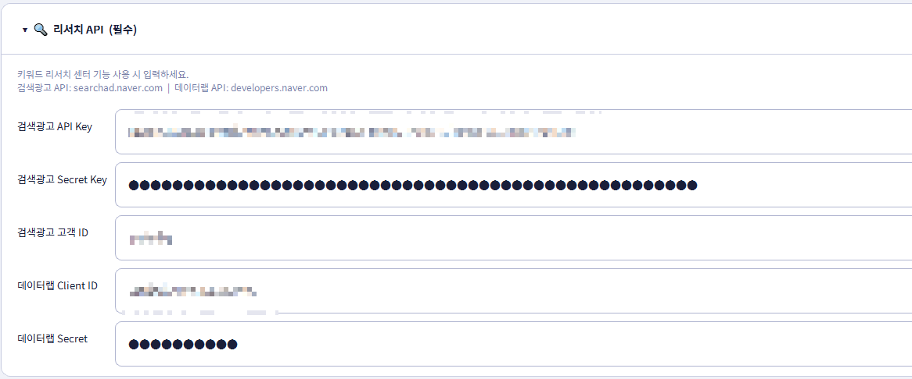
설정 탭 하단의 리서치 API (필수) 섹션에 총 5개의 항목을 입력해야 합니다. 위 3개는 네이버 검색광고(SA) API 키이고, 아래 2개는 네이버 데이터랩 API 키입니다. 아래 안내에 따라 각 키를 발급받아 입력해주세요.
① 검색광고 API 발급 (위쪽 3개 항목)
발급 항목: 검색광고 API Key, 검색광고 Secret Key, 검색광고 고객 ID
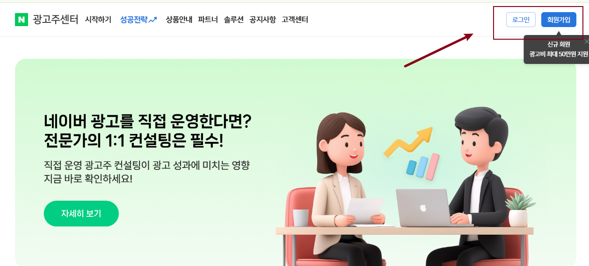
searchad.naver.com으로 접속합니다. 네이버 광고주 계정으로 로그인하거나 회원가입을 진행합니다. 로그인 후 오른쪽 상단의 [광고시스템] 버튼을 클릭하여 광고 대시보드로 진입합니다.
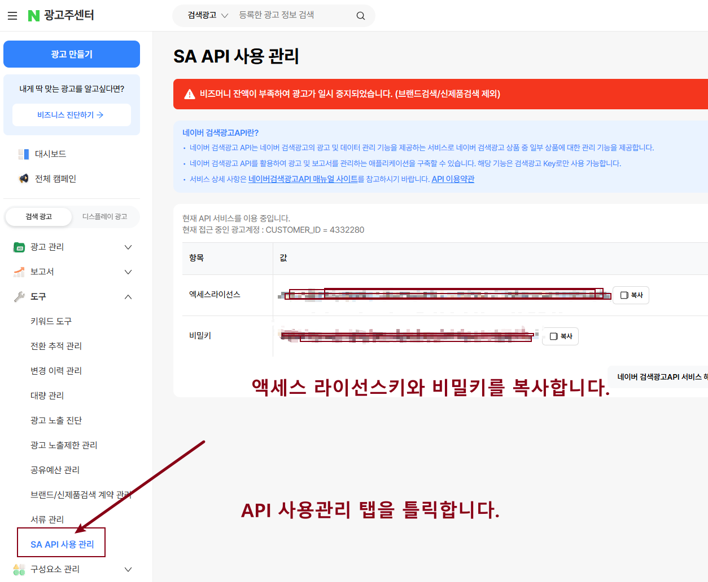
광고시스템 대시보드에서 왼쪽 사이드바의 [도구] 탭을 클릭한 뒤 [API 사용 관리] 탭을 클릭합니다. 화면에 표시된 액세스 라이선스키를 복사하여 설정 탭의 "검색광고 API Key" 항목에 붙여넣고, 비밀키를 복사하여 "검색광고 Secret Key" 항목에 붙여넣습니다.
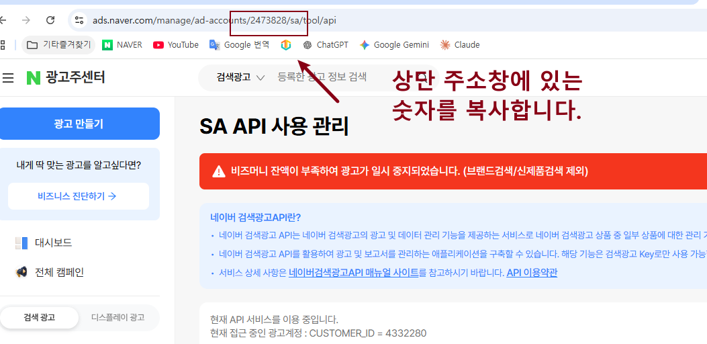
같은 페이지에서 브라우저 상단의 주소창을 확인합니다. URL 형식은 ads.naver.com/manage/ad-accounts/숫자/sa/tool/api입니다. 이 URL 중간의 숫자 부분이 고객 ID입니다. 해당 숫자를 복사하여 설정 탭의 "검색광고 고객 ID" 항목에 붙여넣습니다.
② 데이터랩 API 발급 (아래쪽 2개 항목)
발급 항목: 데이터랩 Client ID, 데이터랩 Secret
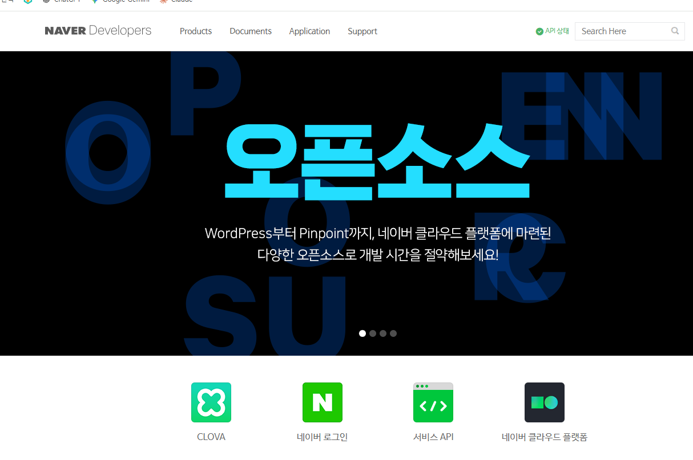
developers.naver.com으로 접속합니다. 네이버 아이디로 로그인합니다.
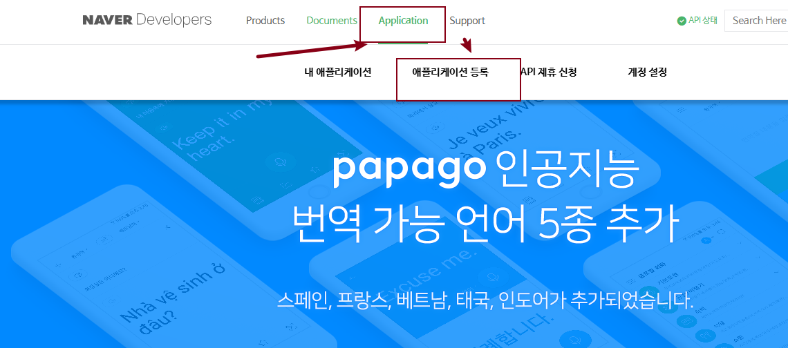
상단 메뉴에서 [Application]을 클릭한 뒤 드롭다운에서 [애플리케이션 등록]을 클릭합니다.
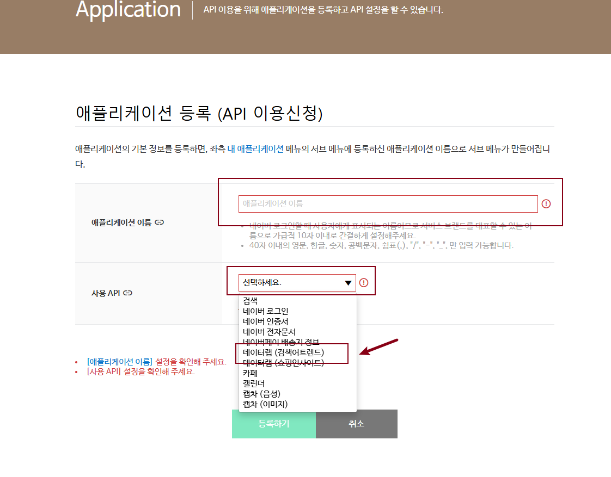
애플리케이션 등록 폼이 열립니다.
- 애플리케이션 이름: 원하는 이름을 자유롭게 입력합니다. (예: 키워드 리서치 툴)
- 사용 API: 드롭다운에서 [데이터랩(검색어트렌드)]를 찾아 선택합니다. 필요에 따라 데이터랩(쇼핑인사이트)도 함께 추가할 수 있습니다.
- 로그인 오픈 API 서비스 환경: 웹(Web)을 선택하고 웹 서비스 URL에
http://localhost를 입력합니다.
입력 후 하단의 [등록하기] 버튼을 클릭합니다. 등록이 완료되면 [Application] → [내 애플리케이션]에서 방금 만든 앱을 선택하고 [개요] 탭에서 Client ID와 Client Secret을 복사하여 설정 탭에 각각 입력합니다.
5-3 IndexNow 설정 (워드프레스 전용, 선택)
IndexNow는 워드프레스 블로그에서만 사용 가능한 기능입니다. 새 글을 발행한 직후 네이버와 빙(Bing) 검색엔진에 즉시 색인을 요청하는 기능으로, 검색 노출 속도를 높이는 데 도움이 됩니다.
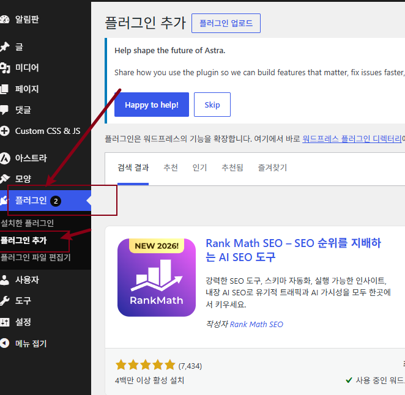
워드프레스 관리자 왼쪽 메뉴에서 [플러그인] → [플러그인 추가]를 클릭합니다.
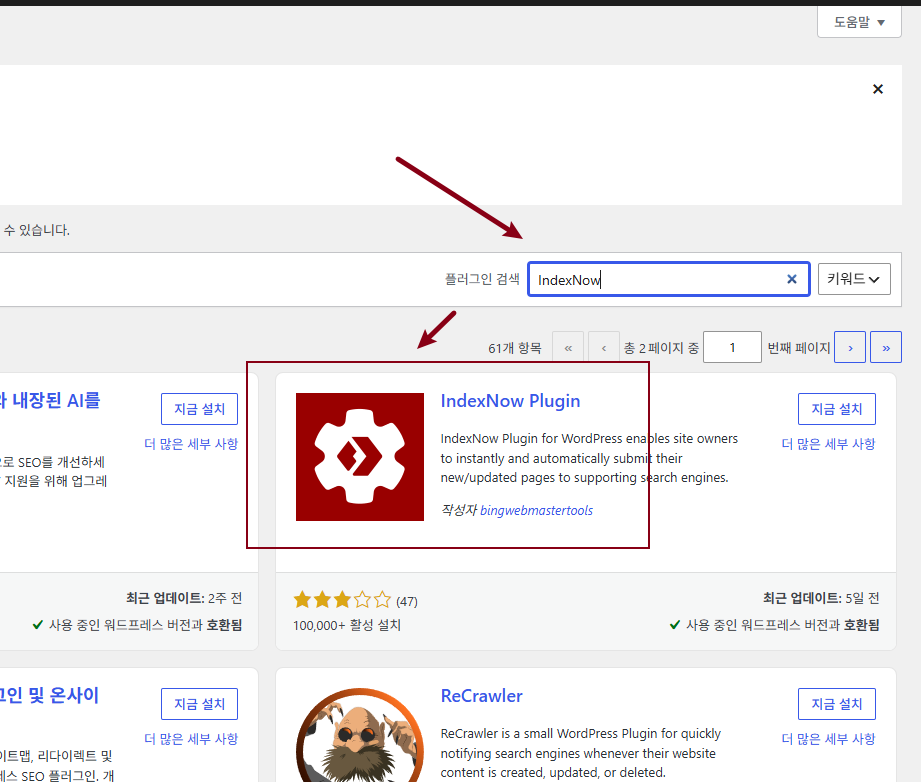
오른쪽 검색창에 IndexNow를 입력합니다. 검색 결과에서 IndexNow Plugin (작성자: bingwebmastertools)을 찾아 [지금 설치] 버튼을 클릭한 뒤 활성화합니다. 이것만으로 글 발행 시 색인 요청이 자동으로 처리됩니다.
5-4 텔레그램 봇 설정 (선택)
텔레그램 봇을 연결하면 블로그 발행 결과를 실시간으로 알림 받을 수 있고, 텔레그램에서 직접 명령을 보내 원격으로 프로그램을 제어할 수 있습니다. 자세한 사용법은 12번 텔레그램 원격 제어 항목을 참고하세요.
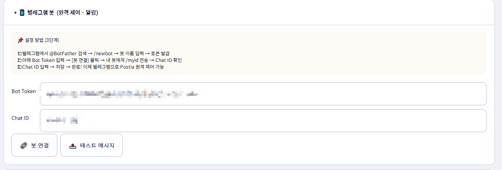
봇 설정 순서는 다음과 같습니다.
① 텔레그램 앱에서 @BotFather를 검색하여 대화를 시작합니다. /newbot 명령을 입력하고 봇 이름과 사용자명을 입력하시면 봇 토큰이 발급됩니다.
② 발급받은 Bot Token을 설정 탭의 Bot Token 입력란에 붙여넣고 [봇 연결] 버튼을 클릭합니다.
③ 연결한 봇과 대화를 시작하여 /myid 명령을 전송하면 숫자로 된 Chat ID가 반환됩니다. 이 Chat ID를 설정 탭에 입력합니다. 여러 명에게 알림을 보내려면 Chat ID를 쉼표로 구분하여 입력하시면 됩니다.
④ [테스트 메시지] 버튼으로 연결 상태를 확인하실 수 있습니다.
6. 플랫폼 계정 등록
포스티아는 네이버 블로그, 티스토리, 워드프레스, 블로거(Blogger) 네 개의 플랫폼에 발행할 수 있습니다.
포스티아의 탭은 계정을 관리하는 방식이 두 가지로 나뉩니다. 어느 탭을 사용하실지에 따라 계정 등록 방법이 다르므로 아래 내용을 먼저 확인하세요.
① AI 에이전트 탭: 에이전트 탭 안에서 + 블로그 추가 버튼으로 블로그를 직접 등록합니다. 블로그마다 계정 정보, 주제, 일일 발행 한도를 개별적으로 관리합니다. 자세한 내용은 7번 AI 에이전트 탭 항목을 참고하세요.
② AI 포스팅 · 벤치마킹 · 홍보 발행 · 리뷰 포스팅 · 쿠팡 파트너스 탭: 설정 탭에 입력한 계정 정보를 사용합니다. 각 탭 화면에 플랫폼별 로그인 버튼이 있으며, 버튼을 클릭하면 설정 탭의 계정으로 자동 로그인됩니다.
6-1 네이버 블로그
네이버 블로그 계정을 등록할 때는 아이디와 비밀번호를 입력합니다.
⚠️ 네이버는 반드시 2단계 인증(2차 인증)을 해제하셔야 합니다. 2단계 인증이 활성화되어 있으면 자동 로그인이 불가능합니다. 네이버 계정 보안 설정에서 해제 후 사용하세요.
카테고리 항목은 선택 사항입니다. 네이버 블로그에 설정하신 카테고리명을 정확히 입력하시면 해당 카테고리로 글이 발행됩니다. 비워두시면 기본 카테고리로 발행됩니다.
6-2 티스토리
티스토리는 카카오 계정으로 로그인합니다. 티스토리 계정이 아닌 카카오 이메일과 카카오 비밀번호를 입력하세요.
⚠️ 카카오 계정도 반드시 2단계 인증을 해제하셔야 합니다.
⚠️ 티스토리 공개 발행 시 DKAPTCHA(캡차)가 차단할 수 있습니다. 자동화 환경에서는 임시저장(비공개)으로 발행하신 후 티스토리 관리자에서 직접 공개로 전환하시는 것을 권장합니다.
6-3 워드프레스
워드프레스는 사이트 URL, 사용자명, 앱 비밀번호(App Password)를 입력하여 등록합니다.
사이트 URL: https://myblog.com 형식으로 입력하세요. 끝에 슬래시(/) 없이 입력합니다.
사용자명: 워드프레스 관리자 아이디입니다.
App Password: 일반 로그인 비밀번호가 아닌 전용 앱 비밀번호입니다. 워드프레스 관리자 → 사용자 → 프로필 하단의 애플리케이션 비밀번호 섹션에서 생성할 수 있습니다. 생성 직후 한 번만 표시되므로 바로 복사해 입력하세요.
6-4 블로거 (Blogger)
블로거는 Google 계정 인증(OAuth)을 통해 연결합니다. Google Cloud Console에서 발급받은 Client ID와 Client Secret을 입력한 후 연결 버튼을 클릭하면 구글 로그인 팝업이 열립니다. 블로거를 운영하는 구글 계정으로 로그인하고 권한을 허용하시면 인증이 완료됩니다. 최초 1회만 브라우저 팝업으로 인증하며, 이후에는 자동으로 유지됩니다.
Client ID / Client Secret: Google Cloud Console → API 및 서비스 → 사용자 인증 정보에서 OAuth 2.0 클라이언트 ID를 생성(유형: 데스크톱 앱)하시면 발급됩니다.
7. AI 에이전트 탭 (자동 운영)
AI 에이전트 탭은 포스티아의 핵심 기능입니다. 등록된 블로그들을 스케줄에 따라 자동으로 운영해주는 탭입니다. 직접 키워드를 입력하지 않아도 AI가 등록된 블로그 주제를 기반으로 인기 키워드를 발굴하고 글을 생성하여 발행합니다.
⚠️ AI 에이전트 탭은 자체 블로그 카드 목록을 사용합니다. AI 포스팅·벤치마킹·홍보 발행 등 다른 탭과 블로그 목록을 공유하지 않습니다. 에이전트로 자동 운영할 블로그는 이 탭에서 별도로 등록해야 합니다.
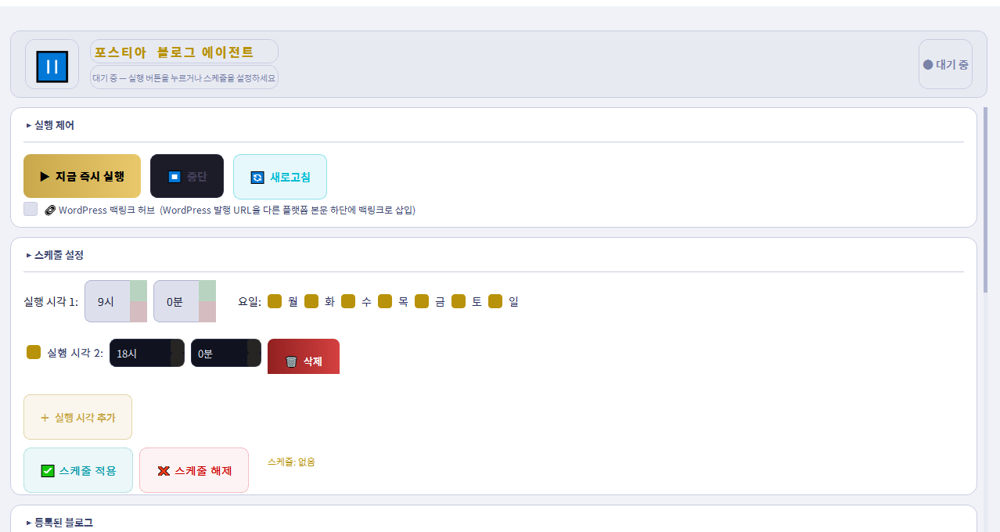
화면 상단의 실행 제어 영역에서 에이전트를 즉시 실행하거나 중단할 수 있습니다. 지금 즉시 실행 버튼을 누르면 스케줄 시간과 관계없이 바로 발행이 시작됩니다.
스케줄 설정 영역에서는 에이전트가 자동으로 작동할 시간과 요일을 설정합니다. 실행 시각과 요일을 지정한 뒤 스케줄 적용 버튼을 클릭해야 설정이 저장됩니다. 실행 시각 추가 버튼으로 하루에 여러 번 실행 시간을 등록할 수 있습니다.
💡 WordPress 백링크 허브 옵션을 활성화하면 WordPress에 발행된 글 URL을 다른 플랫폼 본문 하단에 백링크로 자동 삽입합니다.
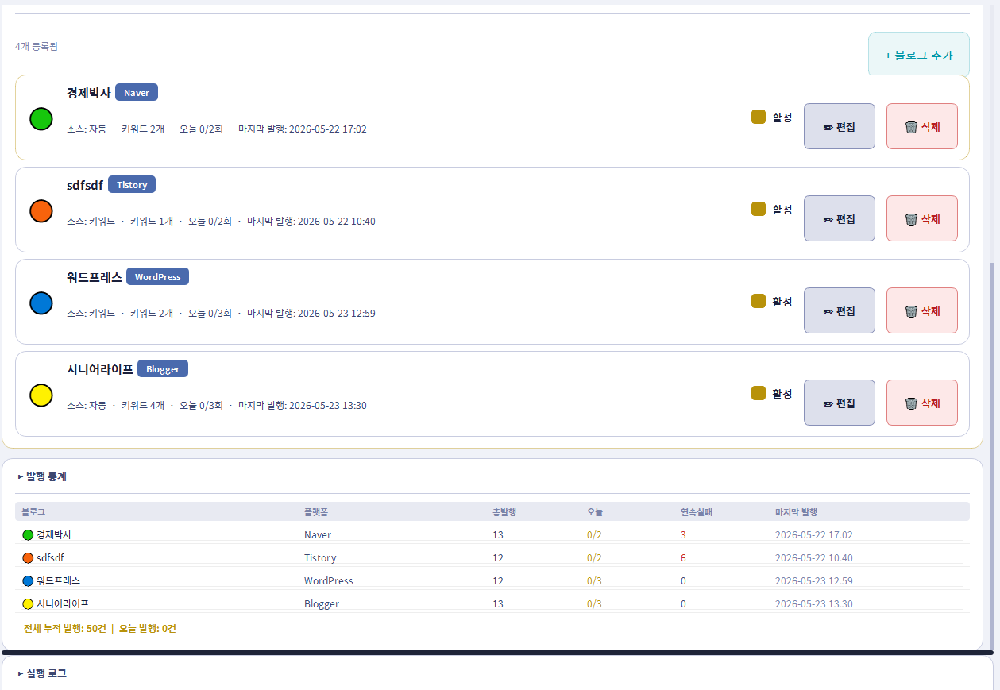
스케줄 설정 아래에는 등록된 블로그 목록이 표시됩니다. 각 블로그 카드에서 플랫폼 종류, 소스 방식(자동/키워드), 오늘 발행 건수, 마지막 발행 시각을 한눈에 확인할 수 있습니다. 활성화 토글로 블로그별 자동 발행을 개별적으로 켜고 끌 수 있으며, 편집·삭제 버튼으로 설정을 수정하거나 블로그를 제거할 수 있습니다.
아래의 발행 통계 표에서는 블로그별 총 발행 건수, 오늘 발행 건수, 연속 실패 횟수, 마지막 발행 일시를 한 번에 볼 수 있습니다. 연속 실패 횟수가 높아진 블로그가 있다면 계정 정보나 플랫폼 설정을 점검해 보세요.
블로그 추가 방법 (플랫폼별)
오른쪽 상단의 + 블로그 추가 버튼을 클릭하면 블로그 등록 화면이 열립니다. 플랫폼을 선택하면 해당 플랫폼에 맞는 입력 항목이 표시됩니다.
네이버
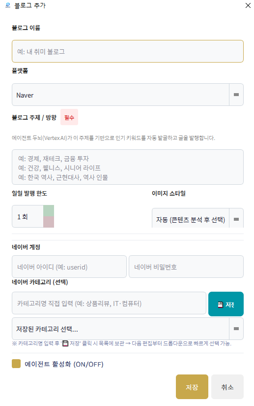
플랫폼에서 Naver를 선택하면 위와 같은 입력 화면이 표시됩니다.
블로그 이름: 목록에서 구분하기 위한 이름입니다. 실제 블로그 이름과 달라도 됩니다.
블로그 주제 / 방향 (필수): AI가 키워드를 발굴할 때 기준이 되는 주제입니다. "경제, 재테크, 금융 투자"처럼 구체적으로 입력할수록 글의 방향이 정확해집니다.
일일 발행 한도: 하루에 자동 발행할 최대 건수입니다. 처음에는 1~2건으로 시작하세요.
이미지 스타일: 기본값은 자동(콘텐츠 분석 후 선택)이며 블로그마다 다르게 지정할 수 있습니다.
네이버 아이디 / 비밀번호: 자동 로그인에 사용됩니다. 반드시 2단계 인증을 해제하신 후 입력하세요.
네이버 카테고리 (선택): 카테고리명을 입력하고 저장 버튼으로 보관하면 다음에 드롭다운으로 빠르게 선택할 수 있습니다. 비워두면 기본 카테고리로 발행됩니다.
티스토리
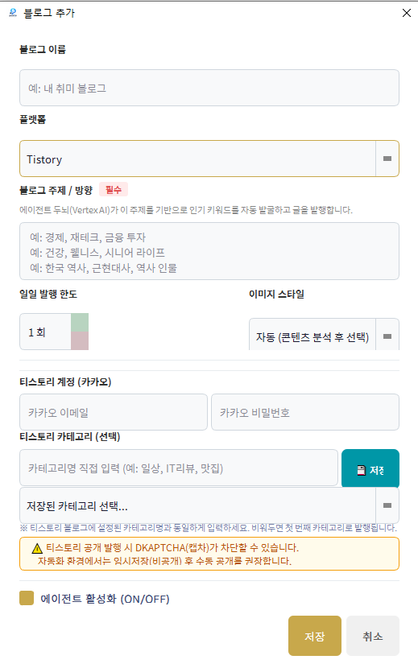
플랫폼에서 Tistory를 선택하면 카카오 계정 입력 항목이 표시됩니다. 티스토리 계정이 아닌 카카오 이메일과 카카오 비밀번호를 입력하세요. 카카오 계정도 2단계 인증을 반드시 해제해야 합니다.
⚠️ 티스토리 공개 발행 시 DKAPTCHA(캡차)가 차단할 수 있습니다. 자동화 환경에서는 임시저장(비공개)으로 설정 후 티스토리 관리자에서 직접 공개로 전환하는 것을 권장합니다.
워드프레스
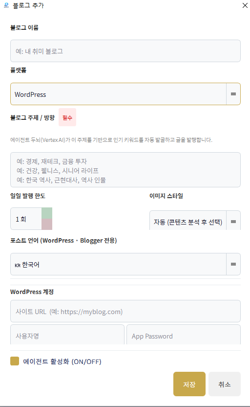
플랫폼에서 WordPress를 선택하면 사이트 URL, 사용자명, App Password 입력 항목이 표시됩니다. App Password는 일반 로그인 비밀번호가 아닌 전용 앱 비밀번호입니다. 워드프레스 관리자 → 사용자 → 프로필 하단 애플리케이션 비밀번호 섹션에서 생성 후 바로 복사해 입력하세요. 포스트 언어는 기본값 한국어이며 해외 블로그 운영 시 변경 가능합니다.
블로거 (Blogger)
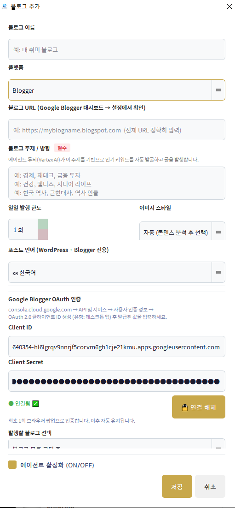
플랫폼에서 Blogger를 선택하면 Google OAuth 인증 항목이 표시됩니다. Google Cloud Console에서 발급받은 Client ID와 Client Secret을 입력한 뒤 연결 버튼을 클릭합니다. 구글 로그인 팝업에서 블로거를 운영하는 구글 계정으로 로그인하고 권한을 허용하면 인증이 완료됩니다. 최초 1회만 팝업 인증이 필요하며 이후에는 자동 유지됩니다.
에이전트 작동 방식
에이전트를 시작하면 프로그램이 등록된 블로그들을 순서대로 확인합니다. 해당 블로그의 오늘 발행 건수가 일일 한도에 도달하지 않은 경우, 블로그 주제를 기반으로 인기 키워드를 자동으로 발굴하고 글을 생성하여 발행합니다.
발행이 완료되면 발행된 글의 제목과 URL이 로그에 표시됩니다. 텔레그램 봇이 설정되어 있다면 발행 완료 알림도 함께 수신됩니다.
💡 처음 운영하실 때는 일일 한도를 1~2건으로 설정하시고 생성되는 글의 품질과 발행 상태를 먼저 확인하시는 것을 권장합니다. 이상이 없으면 점차 늘려가시면 됩니다.
8. 포스팅 센터
포스팅 센터는 원하는 키워드나 내용으로 직접 글을 생성하고 발행하는 탭입니다. AI 에이전트가 자동 운영이라면, 포스팅 센터는 수동 제어 방식입니다. AI 포스팅, 벤치마킹 포스팅, 홍보 발행, 발행이력 등의 서브 탭으로 구성되어 있습니다.
8-1 AI 포스팅
AI 포스팅은 키워드를 입력하면 AI가 해당 키워드로 블로그 글을 생성하여 선택한 블로그에 발행하는 기능입니다.
사용 방법은 다음과 같습니다.
① 발행할 플랫폼과 블로그를 선택합니다. 여러 블로그를 동시에 선택할 수 있으며, 선택한 모든 블로그에 같은 글이 발행됩니다.
② 키워드 입력란에 원하는 키워드를 입력합니다. 예를 들어 "직장인 재테크 방법"처럼 구체적으로 입력할수록 더 관련성 높은 글이 생성됩니다.
③ 글의 스타일과 이미지 개수를 설정합니다. 이미지 개수의 기본값은 5장이며, 네이버 블로그는 자동으로 더 많은 이미지가 삽입됩니다.
④ 포스팅 생성 시작 버튼을 클릭합니다. AI가 글을 생성하고 이미지를 만들어 발행하는 전 과정이 자동으로 진행됩니다. 완료까지 통상 2~10분 정도 소요됩니다.
발행이 진행되는 동안 화면 하단 로그 창에서 진행 상황을 실시간으로 확인할 수 있습니다. 발행이 완료되면 발행된 URL이 로그에 표시됩니다.
⚠️ 발행 중에는 버튼이 비활성화됩니다. 발행이 완료될 때까지 프로그램을 종료하지 마세요.
8-2 벤치마킹 포스팅
벤치마킹 포스팅은 특정 뉴스 기사, 검색 결과, 유튜브 자막 등의 텍스트를 참고 자료로 삼아 AI가 새로운 블로그 글을 생성하는 기능입니다. 단순 키워드 입력보다 더 구체적인 내용이나 최신 정보를 반영한 글이 필요할 때 사용합니다.
참고 텍스트 입력란에 참고할 내용을 붙여넣습니다. 뉴스 기사 본문, 검색 결과 텍스트, 유튜브 자막 등 어떤 형태의 텍스트든 입력 가능합니다. 키워드 입력란에는 글의 핵심 키워드를 입력하고 글의 톤을 선택한 후 시작 버튼을 클릭합니다.
AI는 입력된 참고 텍스트를 기반으로 하되, 그대로 복사하지 않고 새로운 글을 작성합니다.
8-3 홍보 발행
홍보 발행은 특정 웹사이트나 상품 페이지를 홍보하는 블로그 글을 생성하는 기능입니다. 홍보할 사이트의 URL을 입력하면 AI가 해당 사이트의 내용을 분석하여 블로그 형태의 홍보 글을 작성합니다.
소스 URL 입력란에 홍보할 웹사이트 주소를 입력하고 키워드를 함께 입력합니다. 키워드를 여러 개 사용하실 경우 줄바꿈으로 구분하여 입력하면 각 키워드마다 별도의 글이 생성됩니다.
8-4 발행이력
발행이력 탭에서는 지금까지 발행된 모든 글의 기록을 확인할 수 있습니다. 발행 일시, 제목, 플랫폼, 성공 여부가 목록으로 표시됩니다.
상단의 필터 버튼으로 전체, 성공, 실패 항목을 구분하여 볼 수 있습니다. 발행에 실패한 항목은 재시도 버튼으로 다시 발행을 시도할 수 있습니다. 발행된 글의 제목을 클릭하면 해당 블로그 포스트를 바로 확인할 수 있습니다.
9. 쿠팡 파트너스
쿠팡 파트너스 탭은 쿠팡 상품을 검색하여 AI 리뷰 글을 자동으로 생성하고 블로그에 발행하는 기능입니다. 쿠팡 제휴 링크가 글에 자동으로 삽입되어 구매 발생 시 수익이 발생합니다.
API 키 설정
쿠팡 파트너스 기능을 사용하려면 쿠팡 파트너스 API 키가 필요합니다. partners.coupang.com에 접속하여 가입 후 마이페이지에서 API 키(Access Key)와 Secret Key를 발급받으실 수 있습니다. 발급받은 키를 쿠팡 파트너스 탭의 API 설정 항목에 입력하시면 됩니다.
사용 방법
① 검색어 입력란에 리뷰할 상품명을 입력하고 상품 검색 버튼을 클릭합니다.
② 검색 결과 목록에서 리뷰할 상품을 선택합니다. 상품 정보(제목, 이미지, 가격 등)가 자동으로 불러와집니다.
③ 리뷰 스타일을 선택합니다. 친근하고 생생하게, 전문적이고 신뢰감 있게, 유머러스하고 재미있게 등 여러 가지 톤 중에서 선택할 수 있습니다.
④ 발행할 블로그를 선택하고 발행 시작 버튼을 클릭합니다.
⚠️ 네이버 블로그에는 쿠팡 파트너스 글을 지나치게 자주 발행하지 않는 것을 권장합니다. 과도한 상업적 콘텐츠는 블로그 신뢰도에 영향을 줄 수 있습니다.
10. SNS 변환
SNS 변환 기능은 작성된 블로그 글을 인스타그램, 스레드(Threads), 페이스북에 맞는 형식으로 자동 변환해주는 기능입니다. 포스팅 센터 탭 내에 있습니다.
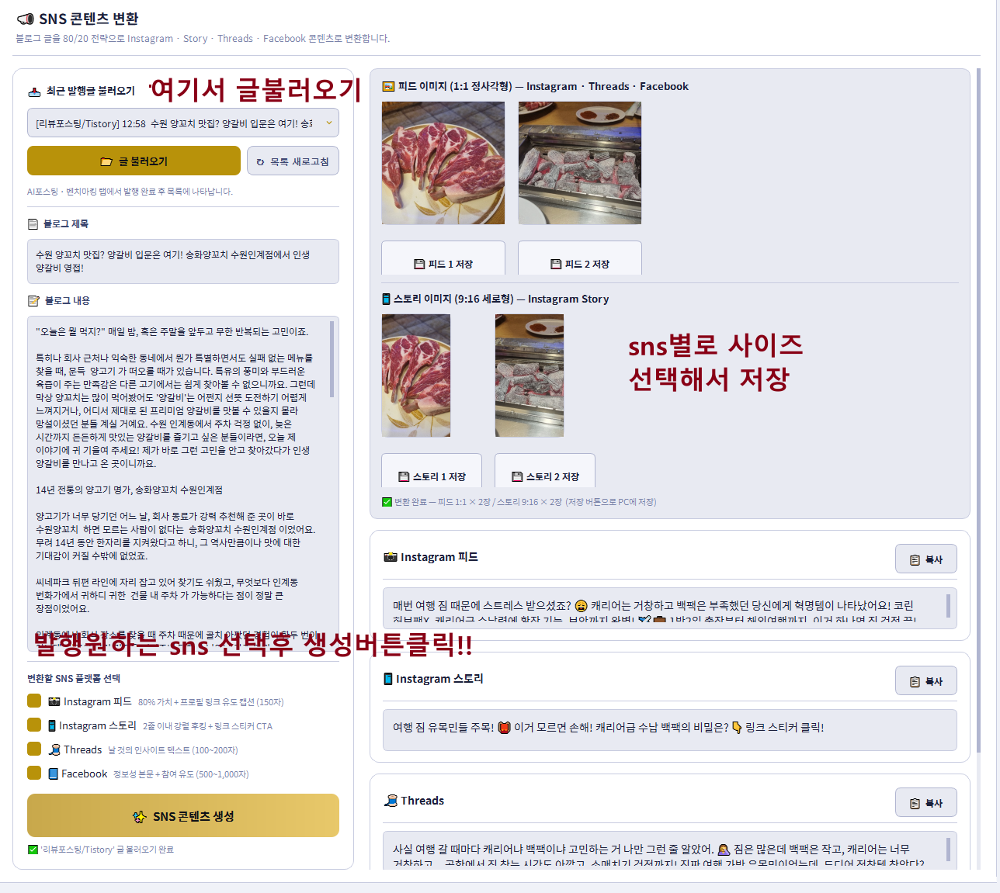
각 SNS 플랫폼은 최적의 글자 수와 문체가 다릅니다. 포스티아는 플랫폼 특성에 맞게 자동으로 변환합니다.
| 플랫폼 | 특징 |
|---|---|
| 인스타그램 피드 | 150자 내외, 가치 전달 + 프로필 링크 유도 구조 |
| 인스타그램 스토리 | 2줄 이내의 짧고 강렬한 문구 |
| 스레드 (Threads) | 100~200자, 구어체의 자연스러운 인사이트 |
| 페이스북 | 500~1,000자, 정보성 본문과 참여 유도 문구 |
사용 방법은 다음과 같습니다.
- 글 불러오기: 버튼을 클릭하여 발행된 블로그 글을 불러옵니다.
- SNS 선택: 오른쪽 패널에서 변환할 SNS 플랫폼(Instagram 피드·스토리, Threads, Facebook)을 선택합니다. SNS별로 이미지 사이즈도 함께 선택·저장할 수 있습니다.
- 생성 버튼 클릭: 발행할 SNS를 선택한 후 [생성] 버튼을 클릭합니다. AI가 각 플랫폼 형식에 맞게 글을 자동 변환합니다.
- 생성된 텍스트를 복사하여 각 SNS에 직접 게시하시면 됩니다.
11. 리서치 센터
리서치 센터는 블로그 운영에 필요한 키워드 분석, 트렌드 파악, 공공데이터 수집을 한 곳에서 처리할 수 있는 탭입니다. 뉴스 트렌드 · 네이버 키워드 도구 · 데이터랩 · 키워드 발굴 · 구글 롱테일 키워드 · 공공데이터 총 6개의 서브 탭으로 구성되어 있습니다.
⚠️ 네이버 키워드 도구 · 데이터랩 · 키워드 발굴 탭은 네이버 검색광고 API 또는 데이터랩 API 키가 등록되어 있어야 사용 가능합니다. 5-2 리서치 API 설정 항목을 먼저 완료하세요.
뉴스 트렌드
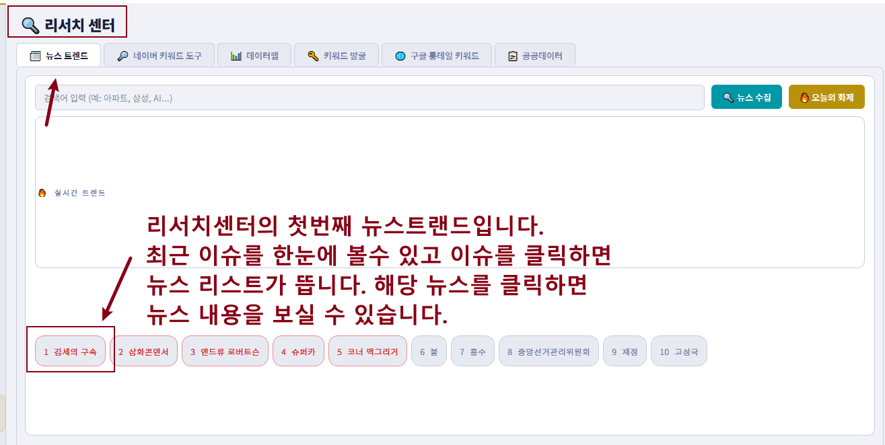
오늘 실시간으로 떠오르는 이슈와 뉴스를 한눈에 확인하는 탭입니다.
검색어 입력 + 뉴스 수집 버튼: 원하는 키워드를 입력하고 뉴스 수집 버튼을 클릭하면 해당 키워드 관련 최신 뉴스가 카드 형태로 표시됩니다.
오늘의 화제 버튼: 버튼 클릭 시 오늘 실시간으로 주목받는 이슈들을 자동으로 수집해 표시합니다.
실시간 트렌드 태그: 화면 하단에 현재 실시간 순위 키워드들이 태그 버튼으로 나열됩니다. 태그를 클릭하면 해당 이슈의 뉴스 목록이 펼쳐집니다.
뉴스 카드 클릭: 뉴스 카드를 클릭하면 해당 뉴스의 본문 내용을 프로그램 내 팝업으로 바로 확인할 수 있습니다.
💡 시의성 있는 트렌드 주제로 블로그 글을 쓰고 싶을 때 활용하세요. 실시간 이슈 키워드를 발굴하여 포스팅 센터에서 즉시 글 생성에 활용할 수 있습니다.
네이버 키워드 도구
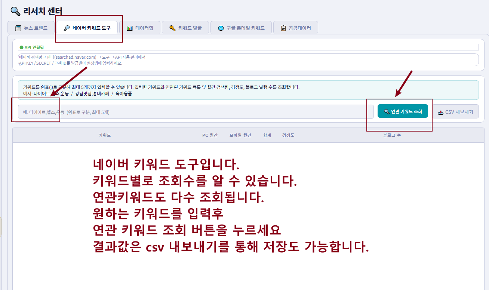
네이버 검색광고 API를 통해 키워드의 월간 검색량과 연관 키워드를 조회하는 탭입니다. 화면 상단의 API 연결 상태가 녹색으로 표시되어 있어야 사용 가능합니다.
키워드 입력란: 조회할 키워드를 쉼표(,)로 구분하여 최대 5개까지 입력합니다. 예: 다이어트,운동 / 강남맛집,홍대카페
연관 키워드 조회 버튼: 버튼 클릭 시 입력한 키워드와 연관된 키워드 목록과 함께 PC 월간 검색량, 모바일 월간 검색량, 합계, 경쟁도, 블로그 발행 수를 표로 보여줍니다.
CSV 내보내기 버튼: 조회된 결과 전체를 CSV 파일로 저장합니다. 엑셀에서 열어 추가 분석에 활용할 수 있습니다.
💡 검색량이 높고 경쟁도가 낮은 키워드일수록 블로그 상위 노출에 유리합니다. 월 1,000~10,000 수준의 검색량에 경쟁도 낮음·중간 키워드를 우선적으로 활용하세요.
데이터랩 — 통합검색 트렌드
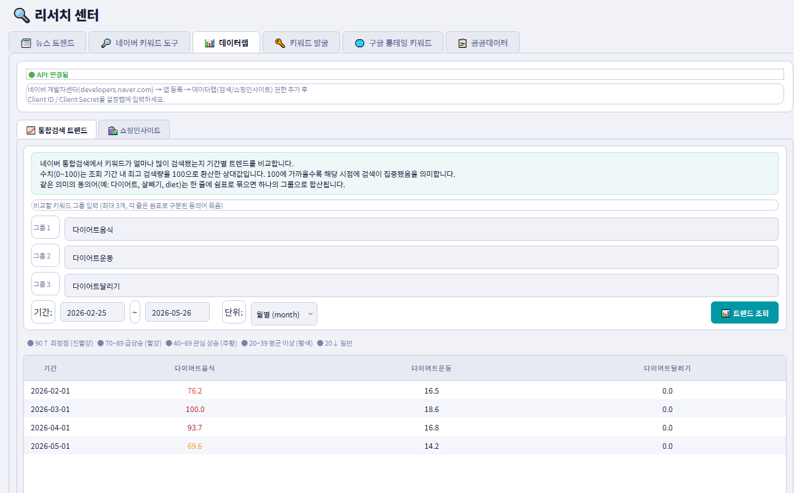
네이버 데이터랩 API를 통해 키워드의 검색량 트렌드를 기간별로 비교하는 탭입니다. 통합검색 트렌드와 쇼핑인사이트 두 개의 서브 탭으로 구성됩니다.
통합검색 트렌드는 네이버 통합검색에서 키워드가 얼마나 많이 검색됐는지 기간별 트렌드를 비교합니다. 수치(0~100)는 조회 기간 내 최고 검색량을 100으로 환산한 상대값입니다.
그룹 입력 (최대 3개): 각 그룹에 비교할 키워드를 입력합니다. 같은 의미의 동의어(예: 다이어트, 살빼기, diet)는 한 그룹에 쉼표로 묶으면 하나의 그룹으로 합산됩니다.
기간 / 단위: 조회할 날짜 범위와 집계 단위(일별/주별/월별)를 선택합니다.
트렌드 조회 버튼: 클릭 시 기간별 트렌드 데이터가 표로 표시됩니다. 수치가 90 이상이면 진빨강(최정점), 70~89는 빨강(급상승), 40~69는 주황(관심 상승), 20~39는 회색(평균 이상)으로 색상 구분됩니다.
데이터랩 — 쇼핑인사이트
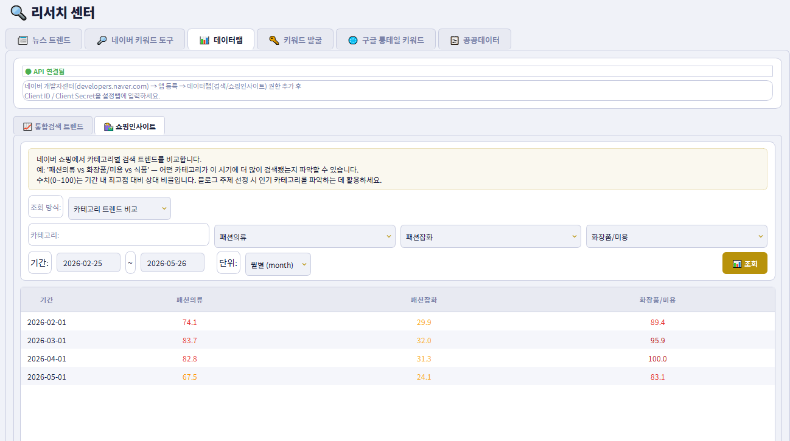
네이버 쇼핑에서 카테고리별 검색 트렌드를 비교하는 탭입니다. 어떤 카테고리가 이 시기에 더 많이 검색됐는지 파악하여 블로그 주제 선정에 활용할 수 있습니다.
조회 방식: 카테고리 트렌드 비교 모드를 선택합니다.
카테고리 선택 (최대 3개): 비교할 쇼핑 카테고리를 드롭다운에서 선택합니다. 예: 패션의류 vs 화장품/미용 vs 식품.
기간 / 단위: 통합검색 트렌드와 동일하게 날짜 범위와 집계 단위를 설정합니다.
조회 버튼: 선택한 카테고리들의 기간별 트렌드 데이터를 표로 비교합니다. 수치(0~100)는 기간 내 최고점 대비 상대 비율입니다.
키워드 발굴
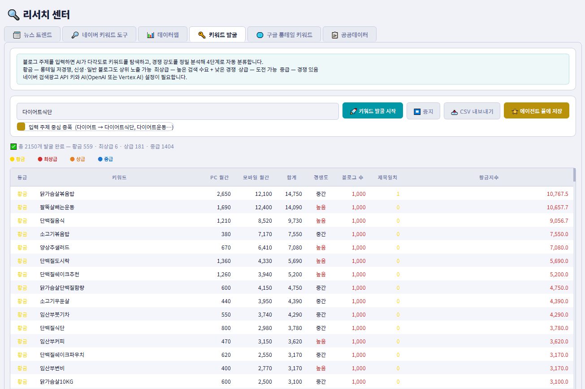
블로그 주제를 입력하면 AI가 다각도로 키워드를 탐색하고, 경쟁 강도를 정밀 분석해 4단계 등급으로 자동 분류해주는 탭입니다. 네이버 검색광고 API와 AI(Vertex AI 또는 OpenAI) 설정이 필요합니다.
주제 입력란: 블로그 주제를 입력합니다. 예: 30대 직장인 건강관리, 다이어트 식단, 강아지 훈련법
키워드 발굴 시작 버튼: 클릭 시 AI가 주제 관련 키워드를 자동으로 탐색하고 경쟁도 분석을 시작합니다. 수백 개의 키워드를 분석하므로 완료까지 수 분이 소요될 수 있습니다.
중지 버튼: 발굴 중간에 작업을 중단합니다. 중단 시점까지 수집된 결과는 그대로 표시됩니다.
CSV 내보내기 버튼: 발굴된 키워드 결과 전체를 CSV 파일로 저장합니다.
에이전트 풀에 저장 버튼: 결과 중 황금 등급 키워드만 추려서 에이전트 키워드 풀에 저장합니다. 저장된 키워드는 AI 에이전트 자동 운영 시 발행 키워드로 우선 사용됩니다.
입력 주제 중심 증폭 옵션: 체크하면 입력 키워드를 앞에 붙인 복합어 위주로 탐색합니다(예: 다이어트 → 다이어트식단, 다이어트운동…). 주제에서 벗어난 키워드가 나오는 것을 방지하고 싶을 때 사용하세요.
등급 기준
🥇 황금: 롱테일 저경쟁 키워드. 신생·일반 블로그도 상위 노출 가능
🔴 최상급: 높은 검색 수요 + 낮은 경쟁. 도전 가치 높음
🟠 상급: 도전 가능한 수준의 경쟁도
🔵 중급: 경쟁이 있는 키워드
결과 표에는 등급, 키워드, PC 월간 검색량, 모바일 월간 검색량, 합계, 경쟁도, 블로그 수, 제목 일치 건수, 황금 지수가 표시됩니다. 황금 지수는 검색량 대비 블로그 수를 기반으로 산출한 점수로, 높을수록 유리한 키워드입니다.
구글 롱테일 키워드
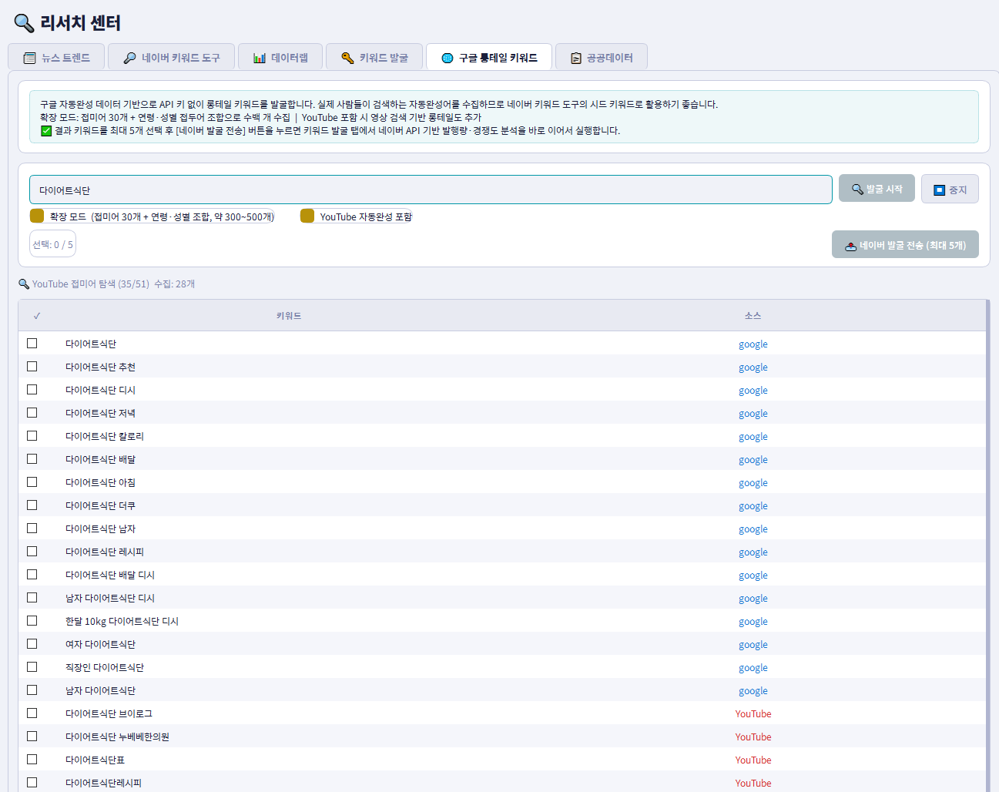
구글 자동완성 데이터를 기반으로 API 키 없이 롱테일 키워드를 발굴하는 탭입니다. 실제 사람들이 검색하는 자동완성어를 수집하므로 네이버 키워드 도구의 시드 키워드로 활용하기 좋습니다.
키워드 입력란: 발굴할 기준 키워드를 입력합니다.
발굴 시작 버튼: 클릭 시 구글 자동완성 데이터를 수집하기 시작합니다. 수집 중에도 결과가 실시간으로 추가됩니다.
중지 버튼: 수집을 중단합니다.
확장 모드 옵션: 체크하면 접미어 30개 + 연령·성별 조합으로 훨씬 더 많은 키워드(약 300~500개)를 수집합니다.
YouTube 자동완성 포함 옵션: 체크하면 구글 자동완성뿐 아니라 YouTube 검색 자동완성어도 함께 수집합니다. 영상 기반 트렌드 키워드까지 파악할 수 있습니다.
결과 목록 체크박스: 원하는 키워드를 최대 5개까지 체크박스로 선택할 수 있습니다. 소스(google/YouTube) 컬럼에서 어디서 수집된 키워드인지 확인됩니다.
네이버 발굴 전송 버튼 (최대 5개): 선택한 키워드를 키워드 발굴 탭으로 즉시 전송합니다. 전송 즉시 키워드 발굴 탭이 열리며 경쟁도 분석이 자동 시작됩니다.
공공데이터 — 복지·지원금
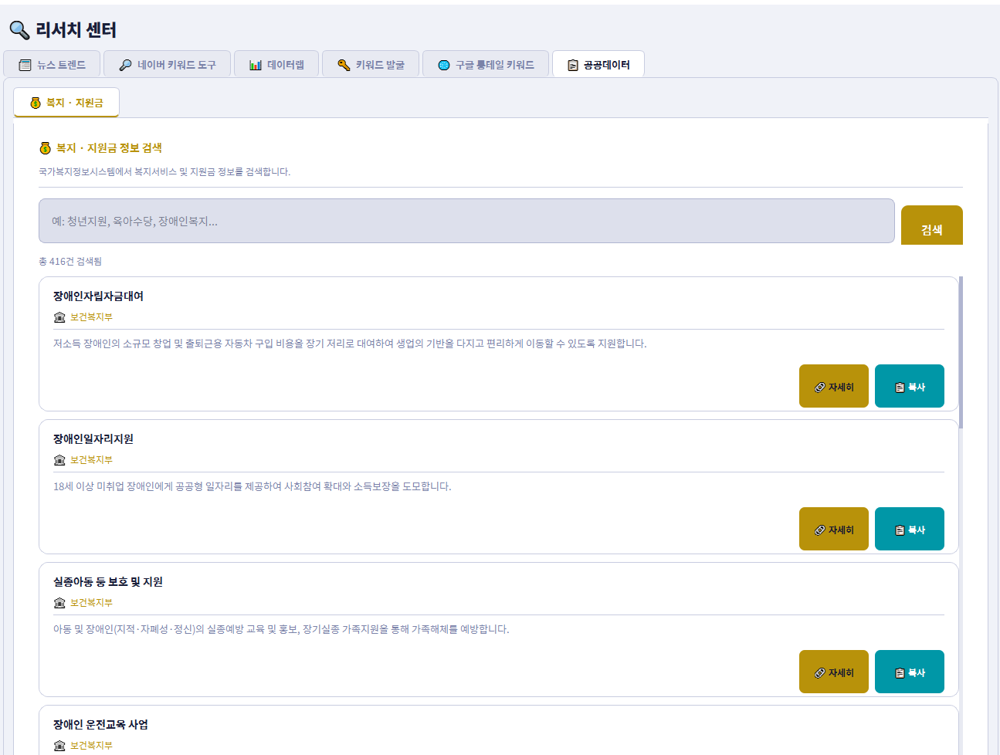
국가복지정보시스템에서 복지서비스 및 지원금 정보를 검색하는 탭입니다. 복지·지원금 관련 블로그 콘텐츠를 작성할 때 공식 정보를 빠르게 수집하는 데 활용할 수 있습니다.
검색창: 찾고 싶은 복지서비스 키워드를 입력합니다. 예: 청년지원, 육아수당, 장애인복지
검색 버튼: 클릭 시 국가복지정보시스템에서 관련 서비스 목록을 가져옵니다.
자세히 버튼: 각 복지서비스 카드의 자세히 버튼을 클릭하면 해당 서비스의 상세 내용을 확인할 수 있습니다.
복사 버튼: 카드의 복사 버튼을 클릭하면 서비스명, 기관명, 설명, 상세 URL이 클립보드에 복사됩니다. 글 작성 시 바로 붙여넣기하여 활용할 수 있습니다.
12. 텔레그램 원격 제어
텔레그램 봇이 설정되어 있다면 PC를 직접 조작하지 않고도 스마트폰 텔레그램 앱에서 포스티아를 원격으로 제어하고 발행 결과를 실시간으로 받아볼 수 있습니다.
⚠️ 텔레그램 원격 제어는 에이전트 탭, AI 포스팅, 벤치마킹 포스팅, 쿠팡파트너스 4개 탭만 지원합니다. 홍보발행·리뷰포스팅은 원격 제어가 지원되지 않습니다.
봇 시작 및 메뉴 열기
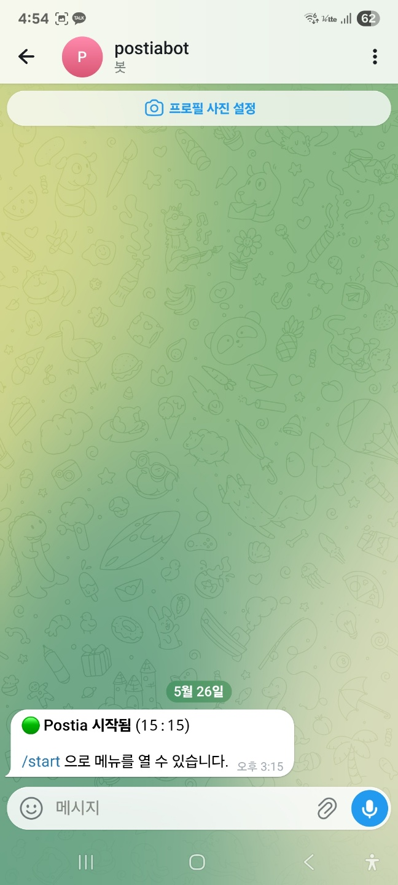
포스티아가 실행되면 텔레그램 봇으로 "Postia 시작됨" 알림이 자동 전송됩니다. 채팅창에 /start 를 입력하면 원격 제어 메뉴가 열립니다.
발행 완료 알림 및 캡차 대응
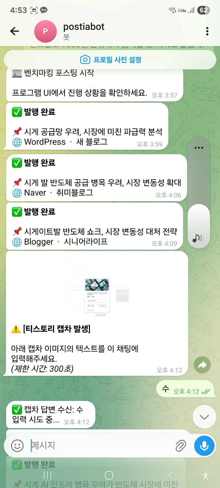
글 발행이 완료될 때마다 플랫폼·블로그명과 함께 ✅ 발행 완료 알림이 전송됩니다. 티스토리 캡차가 발생하면 ⚠️ [티스토리 캡차 발생] 메시지와 함께 캡차 이미지가 전송되며, 채팅창에 캡차 텍스트를 입력(300초 이내)하면 자동으로 처리가 재개됩니다.
AI 포스팅 원격 제어
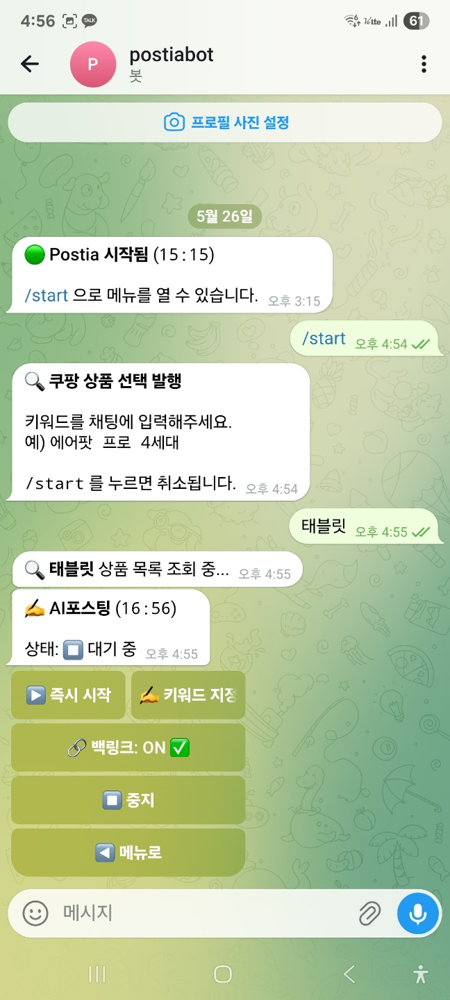
/start 후 AI 포스팅 메뉴를 선택하면 현재 예약 시간과 상태가 표시되며 아래 버튼으로 제어합니다.
- ▶ 즉시 시작: 지금 바로 AI 포스팅을 시작합니다.
- ✍ 키워드 지정: 이번 회차에 사용할 키워드를 직접 지정합니다.
- 🔗 백링크 ON/OFF: 백링크 삽입 기능을 켜거나 끕니다.
- ⏹ 중지: 진행 중인 포스팅을 중지합니다.
에이전트 탭 원격 제어
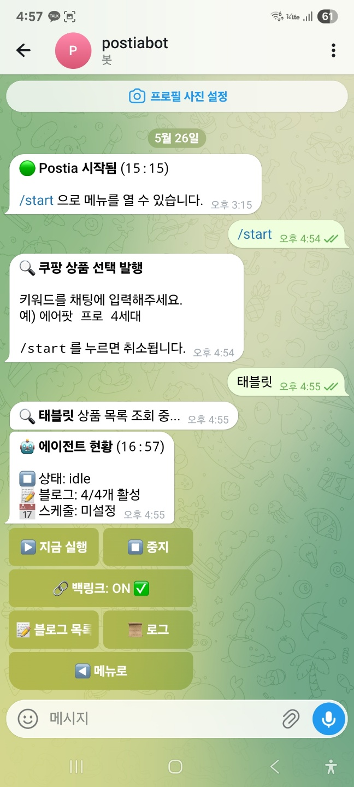
/start 후 에이전트 현황을 선택하면 현재 상태(idle/running), 활성 블로그 수, 스케줄 설정 여부를 확인할 수 있습니다.
- ▶ 지금 실행: 에이전트를 즉시 실행합니다.
- ⏹ 중지: 실행 중인 에이전트를 중지합니다.
- 🔗 백링크 ON/OFF: 백링크 삽입을 켜거나 끕니다.
- 📝 블로그 목록: 등록된 블로그 목록과 활성 상태를 확인합니다.
- 📋 로그: 최근 실행 로그를 확인합니다.
블로그 활성/비활성 관리
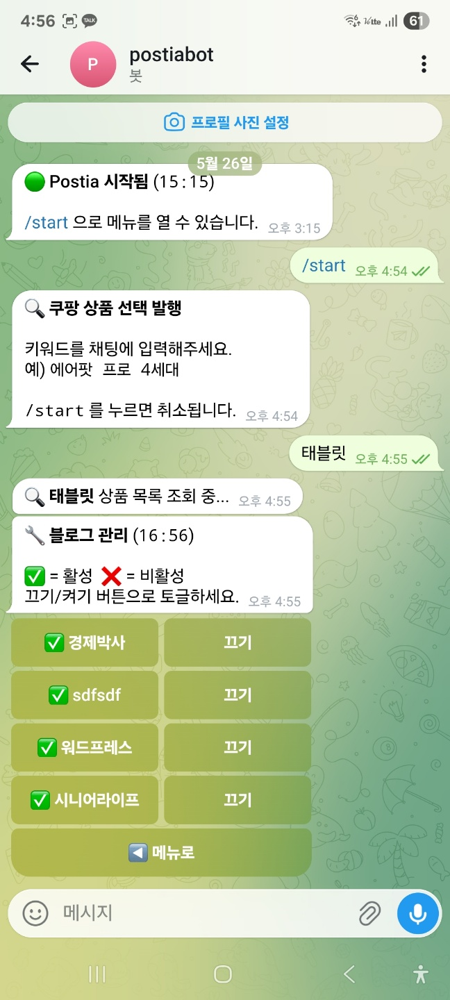
블로그 관리 메뉴에서 등록된 블로그별로 활성/비활성 상태를 확인하고 토글할 수 있습니다. ✅는 활성(발행 대상), ❌는 비활성(발행 제외)을 의미합니다. 각 블로그 옆 [끄기] 버튼을 누르면 즉시 해당 블로그로의 발행이 중단됩니다.
쿠팡파트너스 원격 발행
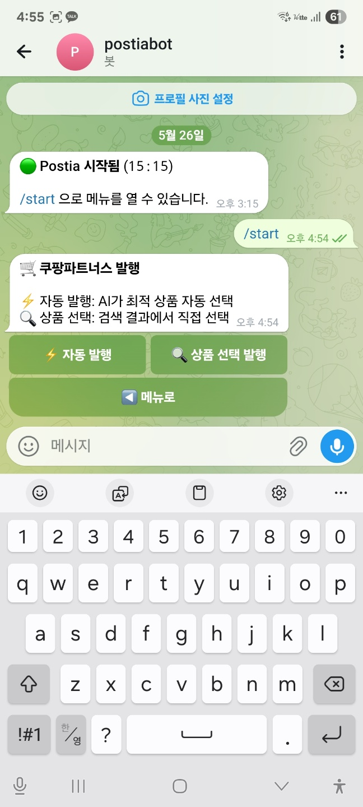
/start 후 쿠팡파트너스 발행 메뉴를 선택하면 두 가지 발행 방식 중 선택할 수 있습니다.
- ⚡ 자동 발행: AI가 최적 상품을 자동으로 선택하여 발행합니다.
- 🔍 상품 선택 발행: 키워드를 직접 입력하여 검색 결과에서 상품을 선택해 발행합니다.
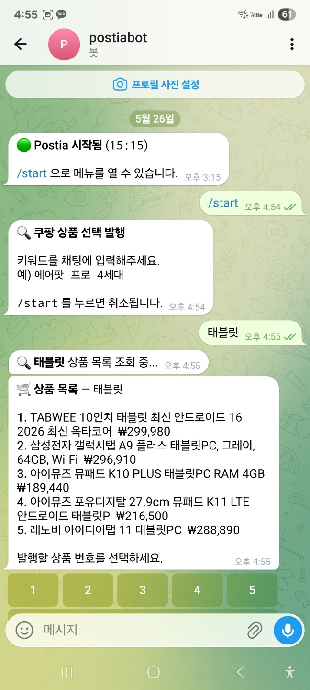
상품 선택 발행 선택 시 채팅창에 키워드를 입력합니다. (예: 태블릿) 쿠팡 상품 5개가 목록으로 표시되며 원하는 번호 버튼을 누르면 해당 상품으로 리뷰 글이 자동 생성·발행됩니다.
벤치마킹 포스팅 — 참고 텍스트 입력
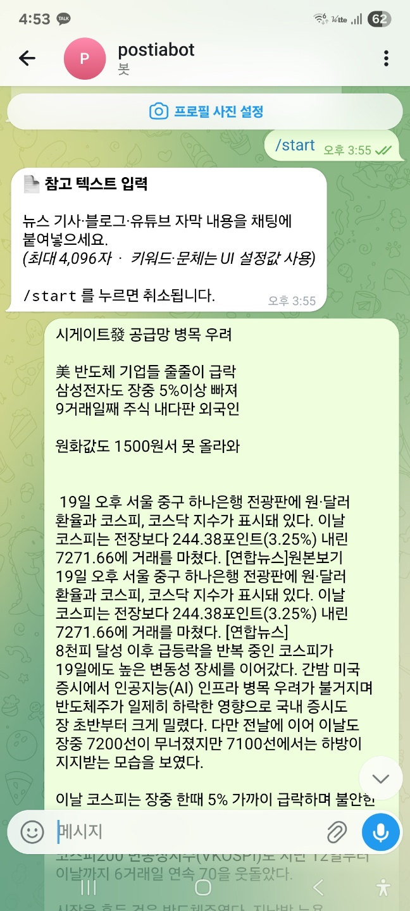
벤치마킹 포스팅 탭에서 원격으로 발행 명령을 내리면 봇이 참고 텍스트 입력을 요청합니다. 뉴스 기사·블로그·유튜브 자막 등 참고할 내용을 채팅에 붙여넣으면 (최대 4,096자) AI가 해당 내용을 참고하여 글을 작성합니다. 입력을 취소하려면 /start 를 입력하면 됩니다.
13. 기타 안내
13-1 기기 초기화
라이선스는 최초 인증한 기기에 고정됩니다. PC를 교체하거나 포맷 후 새 기기에서 사용하려면 기기 초기화가 필요합니다.
기기 초기화는 프로그램 내에서 직접 진행하실 수 있습니다. 설정 탭 하단의 기기 초기화 항목에서 버튼을 클릭하시면 됩니다.
① 상단 메뉴에서 설정 탭 클릭
② 스크롤을 내려 하단의 기기 초기화 항목 찾기
③ 기기 초기화 버튼 클릭 → 확인 팝업에서 Yes 선택
④ "초기화 완료" 메시지 확인 후 프로그램 재시작
⑤ 새 기기에서 프로그램 실행 후 동일한 라이선스 키로 재인증
⚠️ 기기 초기화는 현재 등록된 기기에서만 실행할 수 있습니다. 기존 기기에 더 이상 접근할 수 없는 경우(분실, 파손 등)에는 아래 문의처로 연락해 주세요.
자주 묻는 질문
Q. 이미지 생성이 안 됩니다.
A. Vertex AI JSON 파일이 올바르게 등록되어 있는지 확인하세요. 설정 탭에서 연결 테스트 버튼을 눌러 연결 상태를 확인하실 수 있습니다. Google Cloud 프로젝트에서 Vertex AI API와 Cloud Storage API가 활성화되어 있는지도 확인하세요.
Q. 네이버/티스토리 로그인이 실패합니다.
A. 2단계 인증이 해제되어 있는지 확인하세요. 또한 최근에 비밀번호를 변경하셨다면 프로그램에 등록된 계정 정보도 함께 수정해주세요.
Q. 발행은 완료되었는데 글이 블로그에 보이지 않습니다.
A. 티스토리의 경우 임시저장 설정이 되어 있으면 비공개 상태로 저장됩니다. 티스토리 관리자에서 직접 공개로 전환하세요. 네이버 블로그의 경우 발행 후 검색 노출까지 시간이 걸릴 수 있습니다.
Q. 프로그램을 새 PC에 설치했는데 라이선스 인증이 안 됩니다.
A. 라이선스는 1개 기기에 고정됩니다. 기기 초기화 요청 후 재인증하시면 됩니다. 위 13-1 항목을 참고하세요.
문의 안내
사용 중 궁금한 사항이나 문제가 발생하시면 아래로 문의하여 주세요.
이메일: doedoo291@gmail.com
전화: 010-3387-0352 (상담 가능 시간 09:00~18:00)